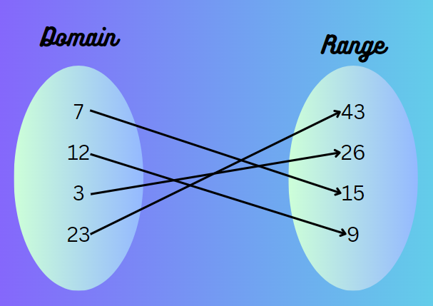
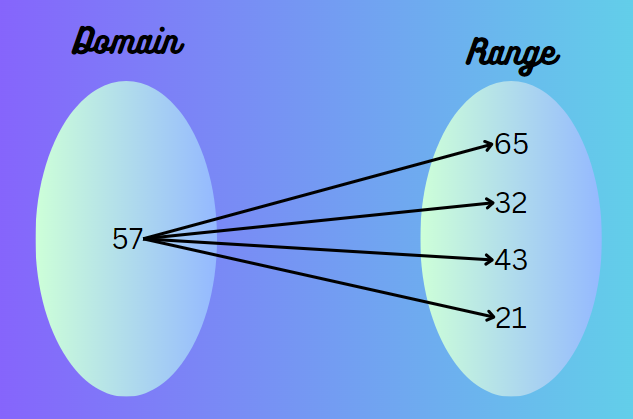
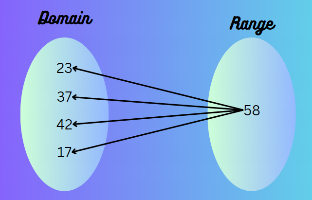

Domain and Range
The domain of a function is the set of values that we are allowed to plug into our function.
This set is the x values in a function such as f(x).
The range of a function is the set of values that the function assumes. This set is the values
that the function shoots out after we plug an x value in. They are the y values.
And Here's Some examples!
One to One

One to Many

Many to One

Home?
Reference: